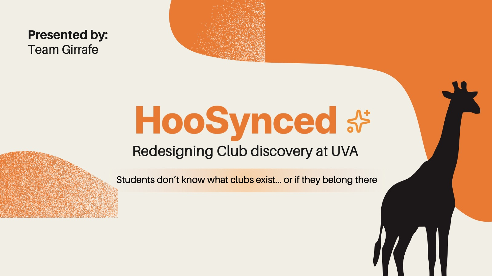
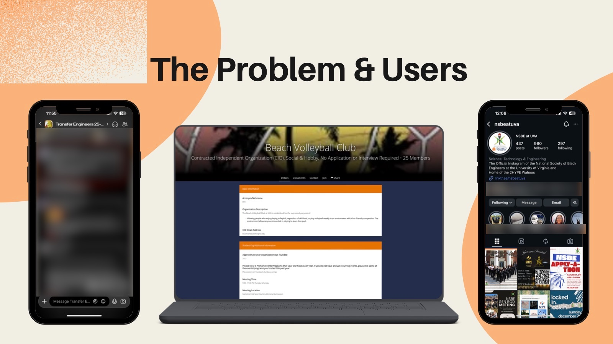
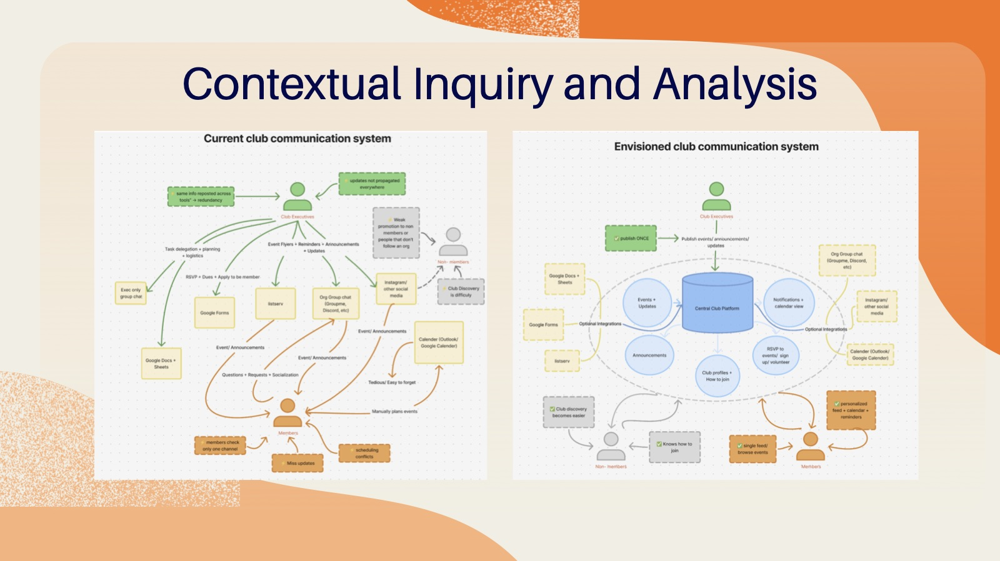
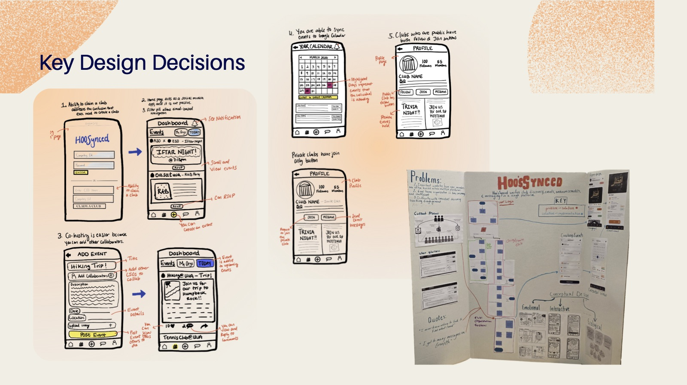
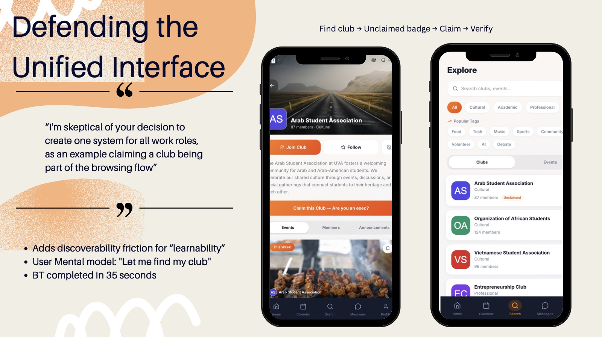
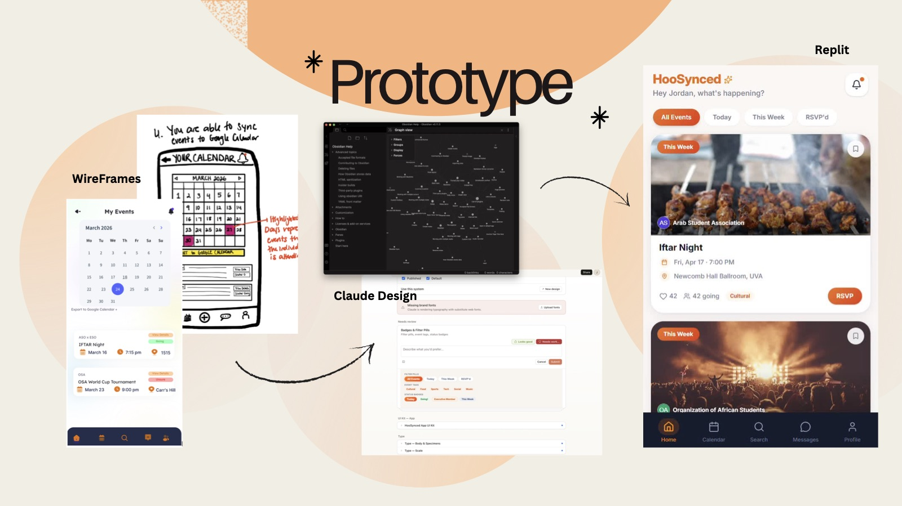
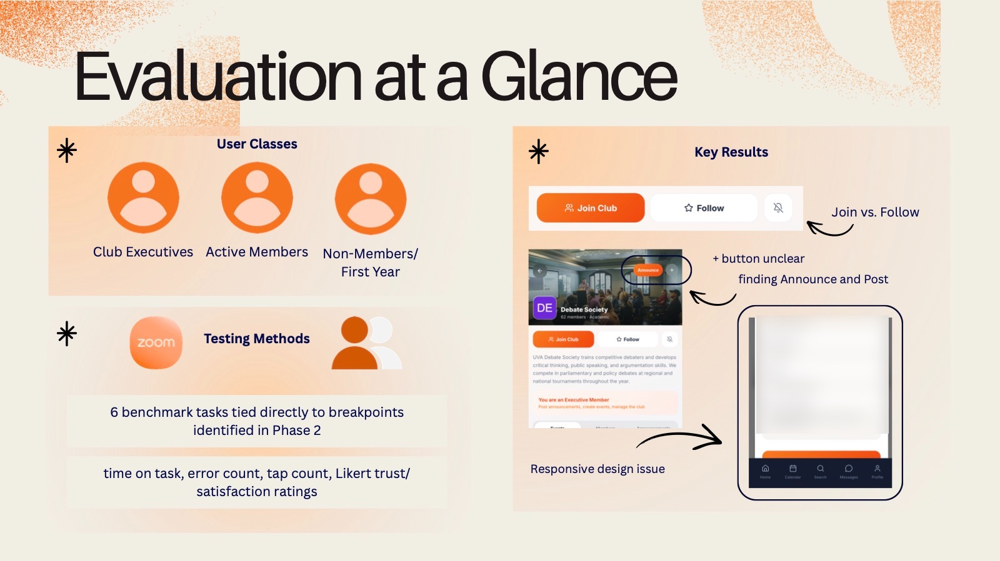
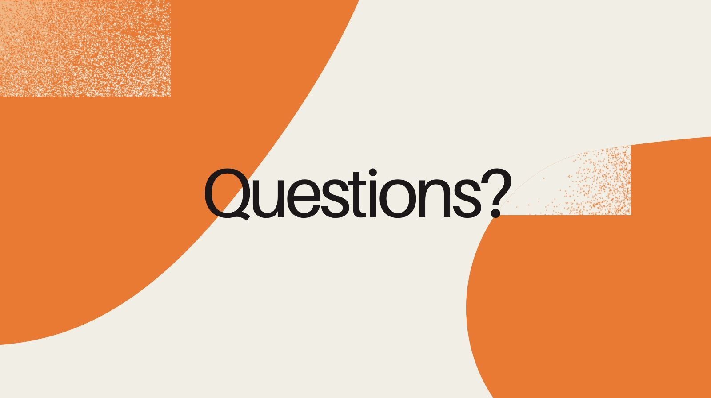

HooSynced
Redesigning club discovery at UVA. Students don’t know what clubs exist, or if they belong there, because club info is scattered across group chats, Instagram and the official directory. We ran contextual inquiries, sketched and prototyped one shared platform, then usability tested it with 6 benchmark tasks.
My role: design, mental models and prototyping.







